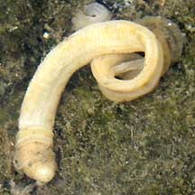
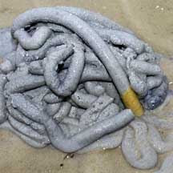
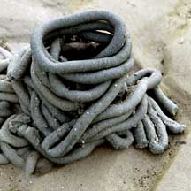
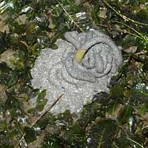
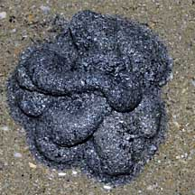
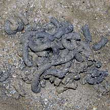
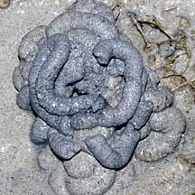
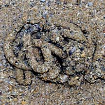

|
|
| worms text index | photo index |
| worms > Phylum Hemichordata > Class Enteropneusta |
| Acorn
worms Class Enteropneusta updated Oct 2016
Where seen? Evidence of this curious animal is commonly seen on many of our shores. On sand bars, in sandy areas especially near seagrasses. The animal itself is almost never seen above ground. All that most people see is its coiled, grey cast (although many may use a less polite word). Sometimes if you are lucky, you might spot a bit of its backside poking out of the ground as it creates its cast. Acorn worms are delicate and almost certain to disintegrate if they are dug up. So please don't try to dig them up. What are acorn worms? Acorn worms are unsegmented worms belonging to Phylum Hemichordata. There are about 70 species of acorn worms. They are quite different from the segmented worms that we are more familiar with such as earthworms and bristleworms. These belong to Phylum Annelida. Features: 9-45cm long, some reaching over 2m long! They are usually slimy brown or pink worms. Acorn worms are burrowing animals. They live in shallow waters, in mucus-lined burrows in sandy or muddy bottoms. Some just hide under stones and shells. An acorn worm's body is made up of three sections: the proboscis, collar and trunk. The proboscis is the front end of the animal. It is short and conical (looking much like an acorn) and is used to collect food and to burrow. The proboscis is connected by a short stalk to the collar. The collar is narrow and contains the mouth. Most of the acorn worm is made up of a long trunk that has gill slits. Oxygenated water is drawn into through the mouth and expelled through these gill slits. In this way, the acorn worm breathes with part of its gut! 'Enteropneusta' means 'gut breathing'. The acorn worm's skin is densely covered with cilia (tiny hairs) and glands which secrete a mucus that covers the body. Some produce a bromide compound that gives them a medicinal smell and might protect them from bacteria and predators. Worms with gills like fishes? Acorn worms are considered more highly specialised and advanced than other worm-like creatures. They have a complex respiratory and circulatory system with a heart that also functions as a kidney. They have a gill-like structure similar to primitive fish and are thus sometimes considered a link between vertebrates and invertebrates. Their larvae appear similar to those of echinoderms and thus suggest that vertebrates and echinoderms have a common ancestor. What do they eat? Acorn worms swallow mud and sand and process these for edible bits. At low tide, they stick out their rear ends at the surface and excrete coils of processed sediments. Called the cast, this is all that most people will see of an acorn worm! Acorn babies: Acorn worms have separate genders that release eggs and sperm into the water for external fertilisation. In some, eggs develop into free-swimming larvae that look very similar to echinoderm larvae. These eventually settle down and change into tiny acorn worms. |
 This one was seen in a pool of water. Chek Jawa, Aug 02  The back end of this worm may stick out of its burrow as it was creating its cast. Chek Jawa, Apr 04  The worm must obviously manipulate its butt in order to 'build' such a neat coil! Chek Jawa, Jul 03  Also amongst seagrasses. Changi, Apr 09 |
| Acorn worms on Singapore shores |
| Photos of Acorn worms for free download from wildsingapore flickr |
| Distribution in Singapore on this wildsingapore flickr map |
 Pulau Sudong, Dec 09 |
 Pulau Senang, Jun 10 |
 Pulau Pawai, Dec 09 |
 Pulau Biola, Dec 09 |
Links
|